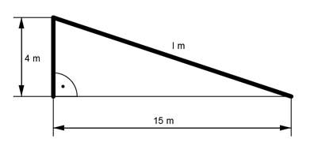

Pythagoras Aufgabe 14 Ein Baum ist bei einem Sturm in 4 m Höhe abgeknickt. Seine Spitze liegt 15 m vom Stamm entfernt. Wie hoch war der Baum in m?  l² = 4² m² + 15² m² = 241 m² |√ h = 241 m² = 15,5 m Der Baum war 4 m + 15,5 m = 19,5 m hoch.